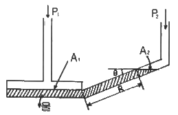
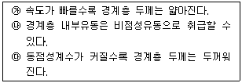
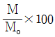
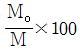
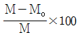
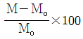
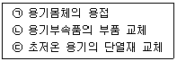
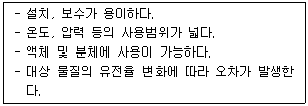

가스기사 (2019-08-04 기출문제)
1과목: 가스유체역학
1. 이상기체의 등온, 정압, 정적과정과 무관한 것은?
- P1V1 = P2V2
- P1/T1 = P2/T2
- V1/T1 = V2/T2
- P1V1/T1 = P2(V1 + V2)/T1
(정답률: 72%)

2. 유체의 흐름상태에서 표면장력에 대한 관성력의 상대적인 크기를 나타내는 무차원의 수는?
- Reynolds 수
- Froude 수
- Euler 수
- Weber 수
(정답률: 67%)
3. 캐비테이션 발생에 따른 현상으로 가장 거리가 먼 것은?
- 소음과 진동 발생
- 양정곡선의 상승
- 효율곡선의 저하
- 깃의 침식
(정답률: 70%)
4. 안지름이 10cm 인 원관을 통해 1시간에 10m3의 물을 수송하려고 한다. 이 때 물의 평균유속은 약 몇 m/s 이어야 하는가?
- 0.0027
- 0.0354
- 0.277
- 0.354
(정답률: 54%)
5. 양정 25m, 송출량 0.15 m3/min 로 물을 송출하는 펌프가 있다. 효율 65%일 때 펌프의 축 동력은 몇 kW 인가?
- 0.94
- 0.83
- 0.74
- 0.68
(정답률: 54%)
6. 30℃인 공기 중에서의 음속은 몇 m/s 인가? (단, 비열비는 1.4 이고, 기체상수는 287 J/kg·K 이다.)
- 216
- 241
- 307
- 349
(정답률: 58%)
7. 어떤 매끄러운 수평 원관에 유체가 흐를 때 완전 난류유동(완전히 거친 난류유동) 영역이었고, 이때 손실수두가 10m 이었다. 속도가 2배가 되면 손실수두는?
- 20 m
- 40 m
- 80 m
- 160 m
(정답률: 69%)
8. 개수로 유동(open channel flow)에 관한 설명으로 옳지 않은 것은?
- 수력구배선은 자유표면과 일치한다.
- 에너지 선은 수면 위로 속도 수두만큼 위에 있다.
- 에너지 선의 높이가 유동방향으로 하강하는 것은 손실 때문이다.
- 개수로에서 바닥면의 압력은 항상 일정하다.
(정답률: 62%)
9. 유체가 반지름 150mm, 길이가 500m 인 주철관을 통하여 유속 2.5 m/s로 흐를 때 마찰에 의한 손실 수두는 몇 m 인가? (단, 관마출 계수 f = 0.03 이다.)
- 5.47
- 13.6
- 15.9
- 31.9
(정답률: 39%)
10. 그림과 같이 물을 사용하여 기체압력을 측정하는 경사마노메타에서 압력차(P1 - P2)는 몇 cmH2O 인가? (단, θ = 30°, 면적 A1 》 면적 A2 이고, R = 30cm 이다.)

- 15
- 30
- 45
- 90
(정답률: 60%)
11. 일반적인 원관내 유동에서 하임계 레이놀즈수에 가장 가까운 값은?
- 2100
- 4000
- 21000
- 40000
(정답률: 72%)
12. 온도 20℃, 절대압력이 5 kgf/cm2 인 산소의 비체적은 몇 m3/kg 인가? (단, 산소의 분자량은 32이고, 일반기체상수는 848 kgf·m/kmol·K 이다.)
- 0.551
- 0.155
- 0.515
- 0.6⑤
(정답률: 53%)
13. 매끈한 직원관 속의 액체 흐름이 층류이고 관내에서 최대속도가 4.2 m/s 로 흐를 때 평균속도는 약 몇 m/s 인가?
- 4.2
- 3.5
- 2.1
- 1.75
(정답률: 67%)
14. 유체에 잠겨 있는 곡면에 작용하는 정수력의 수평분력에 대한 설명으로 옳은 것은?
- 연직면에 투영한 투영면의 압력중심의 압력과 투영면을 곱한 값과 같다.
- 연직면에 투영한 투영면의 도심의 압력과 곡면의 면적을 곱한 값과 같다.
- 수평면에 투영한 투영면에 작용하는 정수력과 같다.
- 연직면에 투영한 투영면의 도심의 압력과 투영면의 면적을 곱한 값과 같다.
(정답률: 53%)
15. 압축성유체에 대한 설명 중 가장 올바른 것은?
- 가역과정동안 마찰로 인한 손실이 일어난다.
- 이상기체의 음속은 온도의 함수이다.
- 유체의 유속이 아음속(subsonic)일 때, Mack 수는 1보다 크다.
- 온도가 일정할 때 이상기체의 압력은 밀도에 반비례한다.
(정답률: 57%)
16. 물체 주위의 유동과 관련하여 다음 중 옳은 내용을 모두 나타낸 것은?

- ㉮
- ㉮, ㉯
- ㉮, ㉰
- ㉯, ㉰
(정답률: 57%)
17. 20℃ 공기속을 1000 m/s로 비행하는 비행기의 주위 유동에서 정체 온도는 몇 ℃ 인가? (단, K = 1.4, R = 287 N·m/kg·K 이며 등엔트로피 유동이다.)
- 518
- 545
- 574
- 598
(정답률: 30%)
18. 유체의 점성계수와 동점성계수에 관한 설명 중 옳은 것은? (단, M, L, T는 각각 질량, 길이, 시간을 나타낸다.)
- 상온에서의 공기의 점성계수는 물의 점성계수보다 크다.
- 점성계수의 차원은 ML-1T-1 이다.
- 동점성계수의 차원은 L2T-2 이다.
- 동점성계수의 단위에는 poise 가 있다.
(정답률: 69%)
19. 원심펌프에 대한 설명으로 옳지 않은 것은?
- 액체를 비교적 균일한 압력으로 수송할 수 있다.
- 토출 유동의 맥동이 적다.
- 원심펌프 중 볼류트 펌프는 안내깃을 갖지 않는다.
- 양정거리가 크고 수송량이 적을 때 사용된다.
(정답률: 51%)
20. 이상기체에 대한 설명으로 옳은 것은?
- 포화상태에 있는 포화 증기를 뜻한다.
- 이상기체의 상태 방정식을 만족시키는 기체이다.
- 체적 탄성계수가 100인 기체이다.
- 높은 압력하의 기체를 뜻한다.
(정답률: 73%)
2과목: 연소공학
21. 액체 연료의 연소 형태가 아닌 것은?
- 등심연소(wick combustion)
- 증발연소(vaporizing combustion)
- 분무연소(spray combustion)
- 확산연소(diffusive combustion)
(정답률: 70%)
22. 50℃, 30℃, 15℃ 인 3종류의 액체 A, B, C가 있다. A와 B를 같은 질량으로 혼합하였더니 40℃가 되었고, A와 C를 같은 질량으로 혼합하였더니 20℃가 되었다고 하면 B와 C를 같은 질량으로 혼합하면 온도는 약 몇 ℃ 가 되겠는가?
- 17.1
- 19.5
- 20.5
- 21.1
(정답률: 35%)
23. 파열물의 가열에 사용된 유효열량이 7000 kcal/kg, 전입열량이 12000 kcal/kg 일 때 열효율은 약 얼마인가?
- 49.2 %
- 58.3 %
- 67.4 %
- 76.5 %
(정답률: 68%)
24. 가스 화재 시 밸브 및 콕크를 잠그는 경우 어떤 소화효과를 기대할 수 있는가?
- 질식소화
- 제거소화
- 냉각소화
- 억제소화
(정답률: 67%)
25. 엔트로피의 증가에 대한 설명으로 옳은 것은?
- 비가역 과정의 경우 계와 외계의 에너지의 총합은 일정하고, 엔트로피의 총합은 증가한다.
- 비가역 과정의 경우 계와 외계의 에너지의 총합과 엔트로피의 총합이 함께 증가한다.
- 비가역 과정의 경우 물체의 엔트로피와 열원의 엔트로피의 합은 불변이다.
- 비가역 과정의 경우 계와 외계의 에너지의 총합과 엔트로피의 총합은 불변이다.
(정답률: 57%)
26. 저발열량이 41860 kJ/kg 인 연료를 3 kg 연소시켰을 때 연소가스의 열용량이 62.8 kJ/℃ 였다면 이 때의 이론연소 온도는 약 몇 ℃ 인가?
- 1000℃
- 2000℃
- 3000℃
- 4000℃
(정답률: 64%)
27. 연소 반응 시 불꽃의 상태가 환원염으로 나타났다. 이 때 환원염은 어떤 상태인가?
- 수소가 파란불꽃을 내며 연소하는 화염
- 공기가 충분하여 완전 연소상태의 화염
- 과잉의 산소를 내포하여 연소가스 중 산소를 포함한 상태의 화염
- 산소의 부족으로 일산화탄소와 같은 미연분을 포함한 상태의 화염
(정답률: 61%)
28. 연료의 발화점(착화점)이 낮아지는 경우가 아닌 것은?
- 산소 농도가 높을수록
- 발열량이 높을수록
- 분자구조가 단순할수록
- 압력이 높을수록
(정답률: 66%)
29. 오토(otto)사이클의 효율을 η1, 디젤(disel)사이클의 효율을 η2, 사바테(Sabathe)사이클의 효율을 η3 이라 할 때 공급열량과 압축비가 같을 경우 효율의 크기는?
- η1 ＞ η2 ＞ η3
- η1 ＞ η3 ＞ η2
- η2 ＞ η1 ＞ η3
- η2 ＞ η3 ＞ η1
(정답률: 62%)
30. CH4, CO2, H2O 의 생성열이 각각 75 kJ/kmol, 394 kJ/kmol, 242 kJ/kmol 일 때 CH4 의 완전 연소 발열량은 약 몇 kJ 인가?
- 803
- 786
- 711
- 636
(정답률: 47%)
31. 열역학 제 0 법칙에 대하여 설명한 것은?
- 저온체에서 고온체로 아무 일도 없이 열을 전달할 수 없다.
- 절대온도 0에서 모든 완전 결정체의 절대 엔트로피의 값은 0이다.
- 기계가 일을 하기 위해서는 반드시 다른 에너지를 소비해야 하고 어떤 에너지도 소비하지 않고 계속 일을 하는 기계는 존재하지 않는다.
- 온도가 서로 다른 물체를 접촉시키면 높은 온도를 지닌 물체의 온도는 내려가고, 낮은 온도를 지닌 물체의 온도는 올라가서 두 물체의 온도 차이는 없어진다.
(정답률: 68%)
32. 유독물질의 대기확산에 영향을 주게 되는 매개변수로서 가장 거리가 먼 것은?
- 토양의 종류
- 바람의 속도
- 대기안정도
- 누출지점의 높이
(정답률: 72%)
33. 연료가 완전연소할 때 이론상 필요한 공기량을 Mo(m3), 실제로 사용한 공기량을 M(m3)라 하면 과잉공기 백분율로 바르게 표시한 식은?




(정답률: 58%)
34. 체적 2m3 의 용기 내에서 압력 0.4 MPa, 온도 50℃ 인 혼합기체의 체적분율이 메탄(CH4) 35%, 수소(H2) 40%, 질소(N2) 25% 이다. 이 혼합기체의 질량은 약 몇 kg 인가?
- 2
- 3
- 4
- 5
(정답률: 45%)
35. 폭발범위의 하한 값이 가장 큰 가스는?
- C2H4
- C2H2
- C2H4O
- H2
(정답률: 44%)
36. 전실화재(Flashover)와 역화(Back Draft)에 대한 설명으로 틀린 것은?
- Flashover는 급격한 가연성가스의 착화로서 폭풍과 충격파를 동반한다.
- Flashover는 화재성장기(제1단계)에서 발생한다.
- Back Draft는 최성기(제2단계)에서 발생한다.
- Flashover는 열의 공급이 요인이다.
(정답률: 51%)
37. 어떤 계에 42 kJ을 공급했다. 만약 이 계가 외부에 대하여 17000 N·m 의 일을 하였다면 내부에너지의 증가량은 약 몇 kJ 인가?
- 25
- 50
- 100
- 200
(정답률: 53%)
38. 수증기와 CO의 몰 혼합물을 반응시켰을 때 1000℃, 기압에서의 평형조성이 CO, H2O 가 각각 28mol%, H2, CO2가 각각 22mol% 라 하면, 정압 평형정수(Kp)는 약 얼마인가?
- 0.2
- 0.6
- 0.9
- 1.3
(정답률: 45%)
39. 다음 중 등엔트로피의 과정은?
- 가역 단열과정
- 비가역 단열과정
- Polytropic 과정
- Joule-Thomson 과정
(정답률: 72%)
40. 도시가스의 조성을 조사해보니 부피조성으로 H2 30%, CO 14%, CH4 49%, CO2 5%, O2 2%를 얻었다. 이 도시가스를 연소시키기 위한 이론산소량(Nm3)은?
- 1.18
- 2.18
- 3.18
- 4.18
(정답률: 39%)
3과목: 가스설비
41. 정압기에 관한 특성 중 변동에 대한 응답속도 및 안정성의 관계를 나타내는 것은?
- 동특성
- 정특성
- 작동 최대차압
- 사용 최대차압
(정답률: 59%)
42. 석유정제공정의 상압증류 및 가솔린 생산을 위한 접촉개질 처리 등에서와 석유화학의 나프타 분해공정 중 에틸렌, 벤젠 등을 제조하는 공정에서 주로 생산되는 가스는?
- OFF 가스
- Cracking 가스
- Reforming 가스
- Topping 가스
(정답률: 59%)
43. 도시가스 원료 중에 함유되어 있는 황을 제거하기 위한 건식탈황법의 탈황제로서 일반적으로 사용되는 것은?
- 탄산나트륨
- 산화철
- 암모니아 수용액
- 염화암모늄
(정답률: 55%)
44. 연소 시 발생할 수 있는 여러 문제 중 리프팅(lifting) 현상의 주된 원인은?
- 노즐의 축소
- 가스 압력의 감소
- 1차 공기의 과소
- 배기 불충분
(정답률: 50%)
45. 도시가스 공급시설에 설치하는 공기보다 무거운 가스를 사용하는 지역정압기실 개구부와 RTU(Remote Terminal Unit)박스는 얼마 이상의 거리를 유지하여야 하는가?
- 2 m
- 3 m
- 4.5 m
- 5.5 m
(정답률: 38%)
46. 배관에서 지름이 다른 강관을 연결하는 목적으로 주로 사용하는 것은?
- 티
- 플랜지
- 엘보
- 리듀서
(정답률: 62%)
47. 발열량이 13000 kcal/m3이고, 비중이 1.3, 공급압력이 200 mmH2O 인 가스의 웨베지수는?
- 10000
- 11402
- 13000
- 16900
(정답률: 58%)
48. 1000 rpm으로 회전하는 펌프를 2000 rpm으로 변경하였다. 이 경우 펌프의 양정과 소요동력은 각가 얼마씩 변화하는가?
- 양정 : 2배, 소요동력 : 2배
- 양정 : 4배, 소요동력 : 2배
- 양정 : 8배, 소요동력 : 4배
- 양정 : 4배, 소요동력 : 8배
(정답률: 63%)
49. 회전펌프에 해당하는 것은?
- 플랜지 펌프
- 피스톤 펌프
- 기어 펌프
- 다이어프램 펌프
(정답률: 68%)
50. 산소가 없어도 자기분해 폭발을 일으킬 수 있는 가스가 아닌 것은?
- C2H2
- N2H4
- H2
- C2H4O
(정답률: 58%)
51. 실린더 안지름 20cm, 피스톤행정 15cm, 매분회전수 300, 효율이 90%인 수평 1단 단동압축기가 있다. 지시평균 유효 압력을 0.2 MPa로 하면 압축기에 필요한 전동기의 마력은 약 몇 PS 인가? (단, 1 MPa은 10 kgf/cm2 로 한다.)
- 6
- 7
- 8
- 9
(정답률: 35%)
52. 도시가스 저압 배관의 설계 시 관경을 결정하고자 할 때 사용되는 식은?
- Fan 식
- Oliphant 식
- Coxe 식
- Pole 식
(정답률: 61%)
53. 가스보일러 물탱크의 수위를 다이어프램에 의해 압력 변화로 검출하여 전기접점에 의해 가스회로를 차단하는 안전장치는?
- 헛불방지장치
- 동결방지장치
- 소화안전장치
- 과열방지장치
(정답률: 61%)
54. 가스온수기에 반드시 부착하여야 할 안전장치가 아닌 것은?
- 소화안전장치
- 역풍방지장치
- 전도안전장치
- 정전안전장치
(정답률: 58%)
55. 나프타를 접촉분해법에서 개질온도를 7⑤℃로 유지하고 개질압력을 1기압에서 10기압으로 점진적으로 가압할 때 가스의 조성변화는?
- H2와 CO2가 감소하고 CH4와 CO가 증가한다.
- H2와 CO2가 증가하고 CH4와 CO가 감소한다.
- H2와 CO가 감소하고 CH4와 CO2가 증가한다.
- H2와 CO가 증가하고 CH4와 CO2가 감소한다.
(정답률: 53%)
56. LPG를 사용하는 식당에서 연소기의 최대가스소비량이 3.56 kg/h 이었다. 자동절체식 조정기를 사용하는 경우 20 kg 용기를 최소 몇 개를 설치하여야 자연기화 방식으로 원활하게 사용할 수 있겠는가? (단, 20 kg 용기 1개의 가스발생능력은 1.8 kg/h 이다.)
- 2개
- 4개
- 6개
- 8개
(정답률: 46%)
57. 찜질방의 가열로실의 구조에 대한 설명으로 틀린 것은?
- 가열로의 배기통은 금속 이외의 불연성재료로 단열조치를 한다.
- 가열로실과 찜질실 사이의 출입문은 유리재로 설치한다.
- 가열로의 배기통 재료는 스테인리스를 사용한다.
- 가열로의 배기통에는 댐퍼를 설치하지 아니한다.
(정답률: 62%)
58. LNG 저장탱크에서 사용되는 잠액식 펌프의 윤활 및 냉각을 위해 주로 사용되는 것은?
- 물
- LNG
- 그리스
- 황산
(정답률: 53%)
59. 차단성능이 좋고 유량조정이 용이하나 압력손실이 커서 고압의 대구경 밸브에는 부적당한 밸브는?
- 글로우브 밸브
- 플러그 밸브
- 게이트 밸브
- 버터플라이 밸브
(정답률: 54%)
60. 다기능 가스안전계량기(마이콤 메타)의 작동성능이 아닌 것은?
- 유량 차단성능
- 과열방지 차단성능
- 압력저하 차단성능
- 연속사용시간 차단성능
(정답률: 44%)
4과목: 가스안전관리
61. 아세틸렌의 임계압력으로 가장 가까운 것은?
- 3.5 MPa
- 5.0 MPa
- 6.2 MPa
- 7.3 MPa
(정답률: 40%)
62. LPG 용기 보관실의 바닥 면적이 40m2 이라면 환기구의 최소 통풍가능 면적은?
- 10000 cm2
- 11000 cm2
- 12000 cm2
- 13000 cm2
(정답률: 65%)
63. 고압가스 제조장치의 내부에 작업원이 들어가 수리를 하고자 한다. 이 때 가스 치환 작업으로 가장 부적합한 경우는?
- 질소 제조장치에서 공기로 치환한 후 즉시 작업을 하였다.
- 아황산가스인 경우 불활성가스로 치환한 후 다시 공기로 치환하여 작업을 하였다.
- 수소제조 장치에서 불활성가스로 치환한 후 즉시 작업을 하였다.
- 암모니아인 경우 불활성가스로 치환하고 다시 공기로 치환한 후 작업을 하였다.
(정답률: 62%)
64. 의료용 산소용기의 도색 및 표시가 바르게 된 것은?
- 백색으로 도색 후 흑색 글씨로 산소라고 표시한다.
- 녹색으로 도색 후 백색 글씨로 산소라고 표시한다.
- 백색으로 도색 후 녹색 글씨로 산소라고 표시한다.
- 녹색으로 도색 후 흑색 글씨로 산소라고 표시한다.
(정답률: 59%)
65. 고압가스 저장시설에서 가연성가스 용기보관실과 독성가스의 용기보관실은 어떻게 설치하여야 하는가?
- 기준이 없다.
- 각각 구분하여 설치한다.
- 하나의 저장실에 혼합 저장한다.
- 저장실은 하나로 하되 용기는 구분 저장한다.
(정답률: 67%)
66. 액화석유가스를 차량에 고정된 내용적 V(L)인 탱크에 충전할 때 충전량 산정식은? (단, W : 저장능력(kg), P : 최고충전압력(MPa), d : 비중(kg/L), C : 가스의 종류에 따른 정수이다.)
- W = V / C
- W = C(V + 1)
- W = 0.9 d V
- W = (10P + 1)V
(정답률: 48%)
67. 이동식 부탄연소기(220 g 납붙임용기 삽입형)를 사용하는 음식점에서 부탄연소기의 본체보다 큰 주물불판을 사용하여 오랜 시간 조리를 하다가 폭발 사고가 일어났다. 사고의 원인으로 추정되는 것은?
- 가스 누출
- 납붙임 용기의 불량
- 납붙임 용기의 오장착
- 용기 내부의 압력 급상승
(정답률: 66%)
68. 냉동설비와 1일 냉동능력 1톤의 산정기준에 대한 연결이 바르게 된 것은?
- 원심식압축기 사용 냉동설비-압축기의 원동기 정격출력 1.2 kW
- 원심식압축기 사용 냉동설비-발생기를 가열하는 1시간의 입열량 3320 kcal
- 흡수식냉동설비-압축기의 원동기 정격출력 2.4 kW
- 흡수식냉동설비-발생기를 가열하는 1시간의 입열량 7740 kcal
(정답률: 42%)
69. 고압가스용 납붙임 또는 접합용기의 두께는 그 용기의 안전성을 확보하기 위하여 몇 mm 이상으로 하여야 하는가?
- 0.115
- 0.125
- 0.215
- 0.225
(정답률: 53%)
70. 용기의 제조등록을 한 자가 수리할 수 있는 용기의 수리범위에 해당되는 것으로만 모두 짝지어진 것은?

- ㉠
- ㉠, ㉡
- ㉡, ㉢
- ㉠, ㉡, ㉢
(정답률: 62%)
71. 아세틸렌용 용접용기를 제조하고자 하는 자가 갖추어야 할 시설기준의 설비가 아닌 것은?
- 성형설비
- 세척설비
- 필라멘트와인딩설비
- 자동부식방지도장설비
(정답률: 47%)
72. 가연성가스 설비 내부에서 수리 또는 청소작업을 할 때에는 설비내부의 가스농도가 폭발 하한계의 몇 % 이하가 될 때까지 치환하여야 하는가?
- 1
- 5
- 10
- 25
(정답률: 48%)
73. 초저온용기에 대한 정의를 가장 바르게 나타낸 것은?
- 섭씨 영하 50℃ 이하의 액화가스를 충전하기 위한 용기로서 단열재를 씌우거나 냉동설비로 냉각시키는 등의 방법으로 용기 내의 가스온도가 사용온도를 초과하지 않도록 한 용기
- 액화가스를 충전하기 위한 용기로서 단열재로 피복하여 용기 내의 가스온도가 상용온ㄷ로를 초과하지 않도록 한 용기
- 대기압에서 비점이 0℃ 이하인 가스를 상용압력이 0.1 MPa 이하의 액체 상태로 저장하기 위한 용기로서 단열재로 피복하여 가스온도가 상용온도를 초과하지 않도록 한 용기
- 액화가스를 냉동설비로 냉각하여 용기 내의 가스의 온다가 섭씨 영하 70℃ 이하로 유지하도록 한 용기
(정답률: 51%)
74. 아세텔렌가스를 2.5 MPa의 압력으로 압축할 때 첨가하는 희석제가 아닌 것은?
- 질소
- 메탄
- 일산화탄소
- 아세톤
(정답률: 56%)
75. 고압가스용 용접용기의 내압시험방법 중 팽창측정시험의 경우 용기가 완전히 팽창한 후 적어도 얼마 이상의 시간을 유지하여야 하는가?
- 30초
- 1분
- 3분
- 5분
(정답률: 58%)
76. 차량에 고정된 탱크로 가연성가스를 적재하여 운반할 때 휴대하여야 할 소화설비의 기준으로 옳은 것은?
- BC용, B-10 이상 분말소화제를 2개 이상 비치
- BC용, B-8 이상 분말소화제를 2개 이상 비치
- ABC용, B-10 이상 포말소화제를 1개 이상 비치
- ABC용, B-8 이상 포말소화제를 1개 이상 비치
(정답률: 63%)
77. 가스 폭발에 대한 설명으로 틀린 것은?
- 폭발한계는 일반적으로 폭발성 분위기 중 폭발성가스의 용적비로 표시된다.
- 발화온도는 폭발성가스와 공기 중 혼합가스의 온도를 높였을 때에 폭발을 일으킬 수 있는 최고의 온도이다.
- 폭발한계는 가스의 종류에 따라 달라진다.
- 폭발성 분위기란 폭발성 가스가 공기와 혼합하여 폭발한계 내에 있는 상태의 분위기를 뜻한다.
(정답률: 64%)
78. 가스난로를 사용하다가 부주의로 점화되지 않은 상태에서 콕을 전부 열었다. 이 때 노즐로부터 분출되는 생 가스의 양은 약 몇 m3/h 인가? (단, 유량계수 : 0.8, 노즐지름 : 2.5 mm, 가스압력 : 200 mmH2O, 가스비중 : 0.5 로 한다.)
- 0.5 m3/h
- 1.1 m3/h
- 1.5 m3/h
- 2.1 m3/h
(정답률: 44%)
79. 초저온가스용 용기제조 기술기준에 대한 설명으로 틀린 것은?
- 용기동판의 최대두께와 최소두께와의 차이는 평균두께의 10% 이하로 한다.
- “최고충전압력”은 상용압력 중 최고압력을 말한다.
- 용기의 외조에 외조를 보호할 수 있는 플러그 또는 파열판 등의 압력방출장치를 설치한다.
- 초저온용기는 오스테나이트계 스테인리스강 또는 티타늄합금으로 제조한다.
(정답률: 52%)
80. 증기가 전기스파크나 화염에 의해 분해폭발을 일으키는 가스는?
- 수소
- 프로판
- LNG
- 산화에틸렌
(정답률: 58%)
5과목: 가스계측기기
81. 가스크로마토그래피로 가스를 분석할 때 사용하는 캐리어 가스로서 가장 부적당한 것은?
- H2
- CO2
- N2
- Ar
(정답률: 51%)
82. 램버트-비어의 법칙을 이용한 것으로 미량 분석에 유용한 화학 분석법은?
- 중화적정법
- 중량법
- 분광광도법
- 요오도적정법
(정답률: 58%)
83. 내경 10cm인 관속으로 유체가 흐를 때 피토관의 마노미터 수자가 40cm 이었다면 이때의 유량은 약 몇 m3/s 인가?
- 2.2 × 10-3
- 2.2 × 10-2
- 0.22
- 2.2
(정답률: 45%)
84. 22℃의 1기압 공기(밀도 1.21 kg/m3)가 덕트를 흐르고 있다. 피토관을 덕트 중심부에 설치하고 물을 봉액으로 한 U 자관 마노미터의 눈금이 4.0 cm 이었다. 이 덕트 중심부의 유속은 약 몇 m/s 인가?
- 25.5
- 30.8
- 56.9
- 97.4
(정답률: 30%)
85. 습식가스미터는 어떤 형태에 해당하는가?
- 오벌형
- 드럼형
- 다이어프램형
- 로터리 피스톤형
(정답률: 57%)
86. 가스크로마토그래피에서 일반적으로 사용되지 않는 검출기(detector)는?
- TCD
- FID
- ECD
- RID
(정답률: 60%)
87. 가스크로마토그래피(Gas Chromatography)에서 캐리어가스 유량이 5 mL/s 이고 기록지 속도가 3 mm/s 일 때 어떤 시료가스를 주입하니 지속용량이 250 mL 이었다. 이 때 주입점에서 성분의 피크까지 거리는 약 몇 mm 인가?
- 50
- 100
- 150
- 200
(정답률: 56%)
88. 측정제어라고도 하며, 2개의 제어계를 조합하여 1차 제어장치가 제어량을 측정하여 제어 명령을 내리고, 2차 제어장치가 이 명령을 바탕으로 제어량을 조절하는 제어를 무엇이라 하는가?
- 정치(正値)제어
- 추종(追從)제어
- 비율(比率)제어
- 캐스케이드(CAscade)제어
(정답률: 65%)
89. 배기가스 중 이산화탄소를 정량분석하고자 할 때 가장 적합한 방법은?
- 적정법
- 완만연소법
- 중량법
- 오르자트법
(정답률: 61%)
90. 10-12은 계량단위의 접두어로 무엇인가?
- 아토(atto)
- 젭토(zepto)
- 펨토(femto)
- 피코(pico)
(정답률: 68%)
91. 가스미터의 구비 조건으로 가장 거리가 먼 것은?
- 기계오차의 조정이 쉬울 것
- 소형이며 계량 용량이 클 것
- 감도는 적으나 정밀성이 높을 것
- 사용가스량을 정확하게 지시할 수 있을 것
(정답률: 65%)
92. 고속, 고압 및 레이놀즈수가 높은 경우에 사용하기 가장 적정한 유량계는?
- 벤투리미터
- 플로노즐
- 오리피스미터
- 피토관
(정답률: 39%)
93. 액면측정 장치가 아닌 것은?
- 유리관식 액면계
- 임펠러식 액면계
- 부자식 액면계
- 퍼지식 액면계
(정답률: 47%)
94. 연소기기에 대한 배기가스 분석의 목적으로 가장 거리가 먼 것은?
- 연소상태를 파악하기 위하여
- 배기가스 조성을 알기 위해서
- 열정산의 자료를 얻기 위하여
- 시료가스 채취장치의 작동상태를 파악하기 위해
(정답률: 55%)
95. 전력, 전류, 전압, 주파수 등을 제어량으로 하며 이것을 일정하게 유지하는 것을 목적으로 하는 제어방식은?
- 자동조정
- 서보기구
- 추치제어
- 정치제어
(정답률: 53%)
96. 전자유량계는 어떤 유체의 측정에 유용한가?
- 순수한 물
- 과열된 증기
- 도전성 유체
- 비전도성 유체
(정답률: 67%)
97. 습식가스미터의 수면이 너무 낮을 때 발생하는 현상은?
- 가스가 그냥 지나친다.
- 밸브의 마모가 심해진다.
- 가스가 유입되지 않는다.
- 드럼의 회전이 원활하지 못하다.
(정답률: 52%)
98. 열전대 온도계에서 열전대의 구비 조건이 아닌 것은?
- 재생도가 높고 가공이 용이할 것
- 열기전력이 크고 온도상승에 따라 연속적으로 상승할 것
- 내열성이 크고 고온가스에 대한 내식성이 좋을 것
- 전기저항 및 온도계수, 열전도율이 클 것
(정답률: 53%)
99. 다음의 특징을 가지는 액면계는?

- 압력식
- 플로트식
- 정전용량식
- 부력식
(정답률: 50%)
100. 우연오차에 대한 설명으로 옳은 것은?
- 원인 규명이 명확하다.
- 완전한 제거가 가능하다.
- 산포에 의해 일어나는 오차를 말한다.
- 정, 부의 오차가 다른 분포상태를 가진다.
(정답률: 59%)
"P1V1/T1 = P2(V1+V2)/T1"은 보일-마리오텔리 법칙에 의한 것으로, 이상기체의 등온과정에서 유효하다. 이를 변형하면 "P1V1/T1 = P2V1/T2 + P2V2/T2"가 되고, "P1V1/T1 = P2(V1+V2)/T2"로 정리할 수 있다. 이는 이상기체의 정압과정에서도 유효하며, 이상기체의 정적과정에서도 V1+V2=V1이므로 유효하다. 따라서 "P1V1/T1 = P2(V1+V2)/T1"이 이상기체의 등온, 정압, 정적과정과 무관하다.